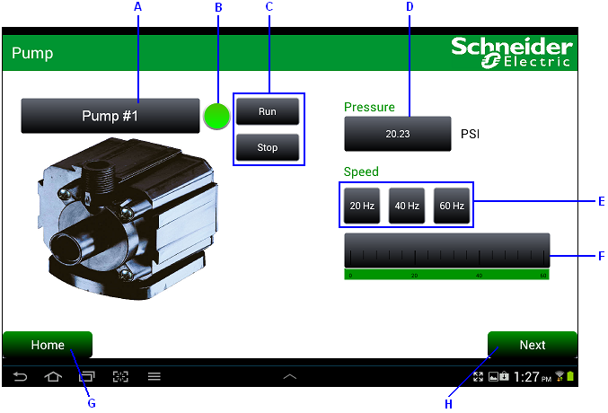
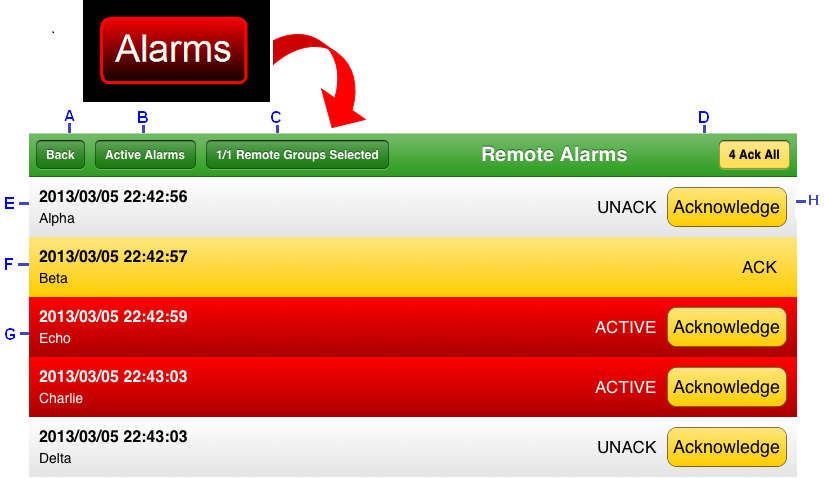
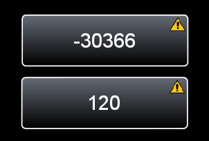

|
|
|
|
|
|
|
|
This section describes the typical functions an operator performs when working in the Vijeo Designer application:
Viewing and monitoring an automation process, and changing values in numeric displays and string displays. For more information, see Changing Values in the Vijeo Designer Application.
Monitoring and acknowledging alarms. For more information, see Remote Alarm Monitoring.
Troubleshooting when the bad data quality icon displays. For more information, see Data Quality.
On the tablet/smartphone, the Vijeo Designer application displays a visually appealing control panel with a collection of objects (such as switches, lamps, bar graphs, displays) that an operator can use to view, control, monitor their automation processes.
The following is an example of an application displayed on an Android tablet that simulates the control of a pump, which is used to empty and fill a water tank, at a water plant. On the tablet, the operator can change the pump's label (see A), control pump operation (see B and C), change the water pressure (see D), change and monitor the speed of the motor running the pump (see E and F), and navigate to another panel (see G and H).

A – String Display. Indicates the name of the pump that is being controlled. To change the entry, tap the string display to open the Edit Value dialog box and the pop-up keypad. Type in the new name, and tap OK.
B – Lamp. Displays the pump's status. Lamp is green for Run or black for Stop.
C – Switches. Tap Run to turn the pump on or Stop to turn off the pump.
D – Numeric Display. Indicates the water pressure. To change the value, tap the numeric display to open the Edit Value dialog box and the pop-up keypad. Type in the new value, and tap OK.
E – Switches. Tap one of the speed switches to set the speed of the motor running the pump.
F – Horizontal Bar Graph. Displays the selected motor speed.
G, H – Switches. Tap Home or Next to exit this panel and go to another panel.
Using a switch that an HMI designer created and configured in Vijeo Designer Buildtime, the operator can monitor and acknowledge remote alarms on the tablet/smartphone. You can send Email or SMS messages to your tablet/smartphone with a link to open the Vijeo Design'Air Plus App and launch the alarm page. In the Vijeo Designer application, tap the switch with the Alarm Panel operation to open the Alarm Panel. For more information on how to create the switch with the Alarm Panel operation in Vijeo Designer, see Switch Configuration for Remote Alarm Monitoring in 23.1.1.2 Drawing Graphics on a Tablet/Smartphone Panel. For more information on sending an alarm link for Vijeo Design’Air Plus by Email or SMS, see Accessing the Alarm Panel from Email or SMS message in Section 23.1.1.3 Working in Vijeo Design’Air Plus.

A – The Back button returns you to the panel the alarm was launched from.
B – The display mode identified on the panel indicates the type of alarms that are currently displayed. You can display Active Alarms, Alarm History, or Alarm Log. To change your current display, click to open the Display Mode window. The display mode is located at the top or at the bottom of the screen, depending on the screen size.
C – The Remote Groups Selected button opens the Select Groups window.
D – The ACK All button acknowledges all the alarms.
E – White indicates an alarm in the Returned to Normal (RTN) state.
F – Yellow indicates an alarm is in the Acknowledged (ACK) state.
G – Red indicates an alarm is in the Active state.
H – The Acknowledge button acknowledges the corresponding alarm.
The operator must determine the display mode and the alarm groups to view. To do this:
Tap the display mode to change the current alarms display mode. You can display Active Alarms, Alarm History, or Alarm Log.
Tap the Remote Groups Selected button to open the Select Groups window. This window displays all the shared alarm groups defined in the remote category. Select one or multiple alarm groups, and tap Continue. If the operator does not make a selection, a blank gray screen displays. If the tablet/smartphone is not connected to the target machine that contains the alarm groups you want to view, "OFFLINE" is indicated beside the alarm group.

Vijeo Design'Air Plus does not support configuring Output in the Alarm Group Settings' General tab and the Counter parameters in the Remote Category's Counter tab.
The panel displays a list of alarms, with each alarm in a colored box to indicate the alarm's state - green for RTN, yellow for acknowledged, and red for active. If an alarm can be acknowledged, the operator can tap the ACK button next to the alarm, which sends an acknowledge request to the target machine. After the acknowledge request is processed, the alarm in the list changes color from red to yellow. The ACK All button allows the operator to acknowledge all the alarm groups selected in the Select Groups window. The ACK All button and Acknowledge buttons for each alarm do not display when you are in the Alarm Log display mode. For more information on the alarm display modes and states, see Alarm Summary.
The operator can return to the tablet/smartphone application by tapping the Back button.
When communication errors occur between the target machine and the tablet/smartphone, the data quality icon displays on objects in the application. These objects reference remote variables from the target machine, and a broken connection means that the tablet/smartphone cannot work with its data-shared variables. The data quality icon indicates unreliable data and appears in the top-right corner of the object.
If the data quality icon appears on an object, the connection between the tablet/smartphone and the host target machine is faulty. The network cable may be unplugged or damaged, or the network may be down. In such a case, check your network connection, and make sure your network server is working properly.
The following example shows an instance of a lost connection between a target machine and a tablet, resulting in the bad data quality icon that displays on two numeric displays that reference remote variables.

For more information, see Section 22.1.2, Data Quality for Shared Variables.